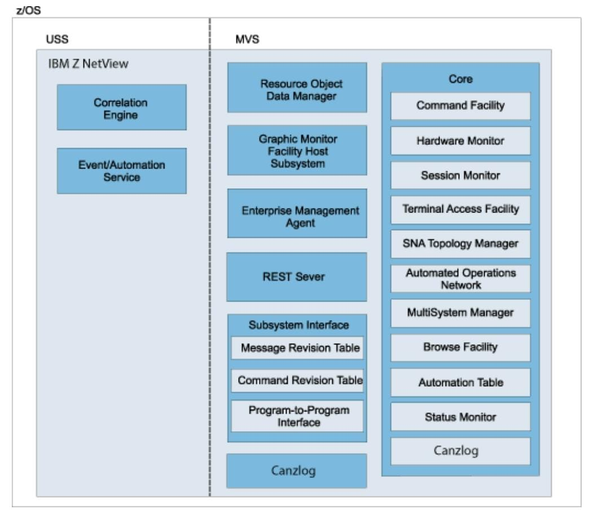
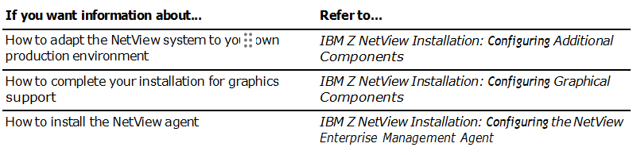

Chapter 1. Understanding the NetView Installation
Before starting the installation and configuration procedures described in this book, perform the SMP/E
installation of the NetView product that is listed in the NetView program directory.
This document is designed to guide you through the installation, configuration, and verification of the NetView program in a minimum amount of time. The assumption for this document is that this is the first time that the NetView program is being installed on this system. Initially, make only essential changes to the sample definitions provided with the NetView program. Your first objective is a fast and error-free installation.
This chapter describes:
- The organization of the NetView program
- Installation of the NetView program
Migrating Users: Refer to the IBM Z NetView Installation: Migration Guide for information on new and deleted functions from prior releases of the NetView product, as well as migration considerations for base functions.
NetView and Network Organization
A sample network comes with the NetView program. It contains definitions for both SNA and non-SNA resources. You can use this sample network as a model for building a new network or for expanding your existing network. For more information about the sample network, see Appendix B, “NetView Samples Overview,” on page 101.
Organization of the NetView Program
You can use the NetView program to manage your systems and networks from one console and can benefit users of small or large networks and small or large systems. Small installations with a limited staff can take advantage of NetView graphics and automation functions to simplify operator jobs and improve productivity. Graphics and automation can reduce, simplify, and in some cases even eliminate operator intervention, enabling faster and more reliable problem diagnosis and resolution.
These same advantages apply to large installations, contending with a higher volume of activity, and greater complexity. These users can automate repetitive and syntax-sensitive tasks to improve reaction time and reduce human errors. They can also automate knowledge-intensive tasks, such as problem determination, and develop expert systems, using the NetView programming interfaces.
Figure 1 on page 2 shows the relationship between NetView components.

Figure 1. NetView Program Host Components
The NetView program includes the following components:
- The command facility is used to send commands and receive messages. The command facility also provides base functions and services for other components such as intercomponent communication, presentation services, database services, and automation facilities.
- The hardware monitor component collects and displays events and statistical data for both hardware and software to identify failing resources in a network. It provides probable cause and recommended actions so that operators can perform problem determination more efficiently.
- The session monitor component provides information about SNA sessions (subarea and Advanced Peer-to-Peer Networking) including session partner identification, session status, connectivity of active sessions, and response time data. The session monitor also provides session trace data, route data, and Virtual Telecommunications Access Method (VTAM) sense code information for problem determination.
- The terminal access facility (TAF) provides operator control of any combination of CICS, IMS, TSO, and other subsystems from one terminal. The operator does not have to log off or use a separate terminal for each subsystem. The subsystem can be in the same domain or in another domain.
- The SNA topology manager dynamically collects topology and status of Advanced Peer-to-Peer Networking and subarea resources. This data is stored in the Resource Object Data Manager (RODM) for display by the NetView management console.
The topology agent supplies information consisting of the SNA nodes in a network, the Advanced Peer- to-Peer Networking transmission groups (TGs) between them, and the underlying logical links and ports supporting the TGs, in response to requests from the manager application.
- Automated Operations Network (AON) uses NetView automation facilities to automate the monitoring and recovery of both TCP/IP and SNA network resources. AON can monitor messages and alerts, and then automatically perform recovery actions. AON also provides an automated help desk to assist with resolving network problems, and generates reports so that you can monitor how well your automation is working.
AON provides default policy definitions that enable automation, without lengthy configuration, as soon as AON is enabled.
- MultiSystem Manager provides for the management of distributed resources from the NetView program. The NetView operator can use MultiSystem Manager to view and manage resources that are identified and managed locally by products. The topology and status of these resources are dynamically managed through RODM and the graphical workstation components of the NetView program.
- The browse facility is used to view local or remote NetView data set members including the Canzlog log, NetView log, NetView parameter files, and NetView panels.
- With the NetView automation table, you can specify processing options for incoming messages and MSUs and issue automatic responses. The table contains a sequence of statements that define the actions that the NetView program can take in various circumstances. The automation table is one of several components that provide automation capabilities.
- The status monitor component provides status information about SNA subarea network resources.
- Resource Object Data Manager (RODM) is an object-oriented data cache. Objects in RODM can represent resources in your network. The data cache is located entirely in the memory of the host processor for fast access to data and high transaction rates. RODM can contain approximately 2 million objects, providing support for large and growing networks.
MultiSystem Manager provides for the management of distributed resources from the NetView program. The NetView operator can use MultiSystem Manager to view and manage resources that are identified and managed locally by an Open agent created by you or a vendor. The topology and status of these resources are dynamically managed through RODM and the graphical workstation components of the NetView program.
Additionally, authorized operators can use the RODMVIEW command to display, create, update, and delete classes, objects, fields, and relationships in RODM.
- The NetView Graphic Monitor Facility host subsystem component maintains the status of resources in RODM and supplies the NetView Management Console with information about RODM resources. It works with RODM and the NetView Management Console to display graphic views of networks and to issue commands to resources that you select from a NetView Management Console view.
The Graphic Monitor Facility host subsystem works with the SNA topology manager and the NetView Management Console to manage SNA resources. It works with MultiSystem Manager and the NetView Management Console to manage non-SNA resources.
- The Z NetView Enterprise Management Agent provides information that you can use to manage your network from the Tivoli Enterprise Portal using sampled and real-time data. The data provides information about network resources and outages, using situations and expert advice, as well as trends in your network through the use of historical data. You can issue NetView, VTAM, and z/OS commands directly from the Tivoli Enterprise Portal to provide instant display and troubleshooting capabilities. The NetView agent enables you to manage both availability and performance data from the Tivoli Enterprise Portal using cross-product links to selected z/OS OMEGAMON® XE agents.
- The subsystem interface is used to receive system messages and to enter system commands. With extended multiple console support (EMCS) consoles, the subsystem interface is used to receive commands, but not messages. In a single system, multiple NetView programs can use the subsystem interface. Each NetView program that uses the subsystem interface requires a NetView subsystem address space in addition to the NetView application address space.
You can use the message revision table to intercept z/OS messages before they are displayed, logged, automated, or routed through your sysplex. With this table, you can make decisions about a message based on its message ID, job name, and other properties and can revise or suppress a message or take certain actions. The message revision table is one of several components that provide automation capabilities.
You can use the command revision table to intercept z/OS commands and make simple modifications inline, without needing to transfer the command to the NetView application address space. Commands can be deleted; parameters and keywords can be added, removed, or modified; nicknames can be expanded (such as creating new command or parameter synonyms); and explanatory WTO messages can be issued. The command revision table is one of several components that provide automation capabilities.
The program-to-program interface (PPI) is an address space provided by the NetView program to enable application programs to communicate with the NetView program and other applications running in the same host. When an application calls the PPI using its application programming interface (API), the request is synchronous.
- The correlation engine correlates multiple events over time, based on duplicates, thresholds, presence or absence of specific events, and other user-specified criteria. The correlation engine is one of several components that provide automation capabilities.
- The Event/Automation Service (E/AS) serves as a gateway for event data between the IBM Z NetView management environment, IBM Tivoli Netcool/OMNIbus probes, and SNMP managers and agents. With this gateway function, you can manage all network events from the management platform of your choice.
- The NetView REST Server is an OpenAPI-conforming server that handles front-end requests from applications and provides RESTful APIs that are suited for industry standardization to interact with automation and network resources.
The server can be accessed within Zowe™, hosted by the Open Mainframe Project, or independently from an application. The server runs in UNIX System Services (USS). APIs are available in the following areas:
–Canzlog messages and message attributes
–Automation table statements and automation members
–Sysplex connection distribution statistics for distributed dynamic virtual IP addresses (DDVIPAs) and ports
–NetView task health
–NetView domains accessible to an Enterprise Master NetView program or a Sysplex Master NetView program
–NetView commands
Swagger documentation can be accessed through the Zowe API Mediation Layer or directly from the server.
IBM Server Management Unite Automation V1.1.7 is available with IBM Z NetView V6.3.
For more information about NetView components, see Appendix A, “NetView Functions and Tasks,” on page 89.
Naming Conventions
The NetView program uses the following types of data sets:
- System data sets
- NetView user partitioned data sets
- NetView VSAM data sets
- NetView sequential data sets
- UNIX system services (USS) file system data sets
System data sets use the high-level qualifier NETVIEW.V6R3M0 as the default naming convention. This high-level qualifier is specified as &SQ1 in the NetView Job Control Language (JCL) samples.
NetView user partitioned data sets use the following default naming convention:
- The high-level qualifier is NETVIEW.V6R3USER, specified as &Q1 in the NetView JCL.
- The middle-level qualifier is the host NetView domain.
- The low-level qualifier is the library name.
For example, with data set NETVIEW.V6R3USER.CNM01.DSIPARM, the high-level qualifier is NETVIEW.V6R3USER, the middle-level qualifier is CNM01, and the low-level qualifier is DSIPARM.
NetView VSAM data sets have the following default naming convention:
- The high-level qualifier is NETVIEW, specified as &VQ1 in the NetView JCL.
- The middle-level qualifier, when specified, is the host NetView domain.
- In most cases, the low-level qualifier is defined by the DSTINIT primary VSAM DD name (PDDNM) and secondary VSAM DD name (SDDNM) for the initialization member associated with a specific NetView component.
For example, with NETVIEW.CNM01.DSILOGP, the high-level qualifier is NETVIEW, the middle-level qualifier is CNM01, and the low-level qualifier is DSILOGP.
NetView sequential data sets have the following default naming convention:
- The high-level qualifier is NETVIEW, specified as &TQ1 in the CNMPROC (CNMSJ009) procedure.
- The middle-level qualifier is the host NetView domain.
For example, with NETVIEW.CNM01.CNMDVIPP, the high-level qualifier is NETVIEW, the middle-level qualifier is CNM01, and the low-level qualifier is CNMDVIPP.
You can substitute your own values for &SQ1, &Q1, &VQ1, and &TQ1 in the JCL samples and procedures that are supplied with the NetView product.
The NetView program also uses zSeries file system (zFS) data sets relative to z/OS UNIX system services as described in the NetView program directory. The NetView program allocates the following directories:
- ./usr/lpp/netview/v6r3/bin
- ./usr/lpp/netview/v6r3/mibs
- ./usr/lpp/netview/v6r3/lib
- ./usr/lpp/netview/v6r3/samples
- ./usr/lpp/netview/v6r3/samples/at-tls
- ./usr/lpp/netview/v6r3/samples/properties
- ./usr/lpp/netview/v6r3/www
- ./usr/lpp/netview/v6r3/www/img
Installation Package
If you are installing the NetView program for the first time, you will find familiar IBM fulfillment methods (such as Shop zSeries), installation tools (such as SMP/E or InstallShield), and installation documentation, including a program directory.
Product media (or their electronic representation) are in the standard IBM relfile format that IBM software manufacturing uses to create the images for installation systems such as ServerPac and CBPDO. If you receive your product through the CBPDO system, maintenance is included on the media for you to install. If you receive your product as part of a ServerPac or SystemPac system, maintenance is preinstalled.
For detailed information about the installation package contents, see the NetView program directory.
Workstation-based NetView code is shipped in two formats:
http://www.ibm.com/software/tivoli/products/netview-zos/
For service updates to workstation-based NetView code, see the Tivoli website.
NetView Program Directory
The Program Directory for IBM Z NetView, GI11-9444 (English) or GI11-9445 (Japanese) is shipped with the product and is also available on the IBM Z NetView Knowledge Center. The Program Directory provides instructions to install the NetView product to the SMP/E libraries. In addition, it contains helpful hints for a problem-free installation. It also lists the program temporary fixes (PTFs) that enable other products to work properly with NetView. Read the NetView program directory to help ensure a problem- free installation.
Preventive Service Planning (PSP)
Before you install the NetView program, make sure that you review the current Preventive Service Planning (PSP) information. For information on how to access PSP information, see the Program Directory for IBM Z NetView.
Applying a Required PTF
The NetView program directory lists APARs from the previous release that have been created for z/OS products to work with this NetView release.
The program directory also lists APARs from the previous NetView releases that are incorporated into the release. Check with the IBM Support Portal to obtain the latest available service.
Estimating Required Resources
Refer to the IBM Z NetView Tuning Guide and the NetView program directory for information about estimating the hardware and software resources required to install NetView. If you cannot determine how to estimate the resource types, call IBM Software Support at 1-800-237-5511 or contact your IBM Software Support account representative.
Installation and Configuration Procedures
Installation and configuration steps described in this book follow this order:
- Installing the NetView program from the distribution media using z/OS SMP/E with the help of the NetView program directory
- Preparing your MVS system for the NetView program
- Customizing and running sample jobs to install the basic functions of the NetView program and the sample network
- Preparing VTAM system definitions
- Starting the NetView program and verifying your installation
Use the sample network as a model for building a new network or for expanding your existing network. All VTAM, NetView, and NCP definition statements are supplied as samples. The CNMSAMP library providesthe JCL and data necessary to build the entire network in subarea 01. Also included, is network NETB which shows a multiple-network environment. Network NETB has one host subarea, 01.
This book assumes that you are installing NetView using the default values provided in this manual and in the sample files (installation in subarea 01 and using domain CNM01 for network NETA). If you are installing the NetView program in a subarea other than 01 or a domain other than CNM01, see the sample data set members for directions on what to change.
Installation Results
When you complete the procedures described in this book, the following functions are operational:
- Base NetView components including the command facility, hardware monitor, and session monitor
- Automation table to respond automatically to messages and MSUs, including alerts
- Canzlog log that stores NetView and system messages
- NetView log that stores messages and commands
- Save / Restore VSAM facility to save critical information across NetView restarts
- NetView to NetView remote command processing (RMTCMD)
- TCP/IP connection management
- Discovery manager
- XCF services
When the NetView program is installed and functioning correctly, many NetView functions are not yet active.
